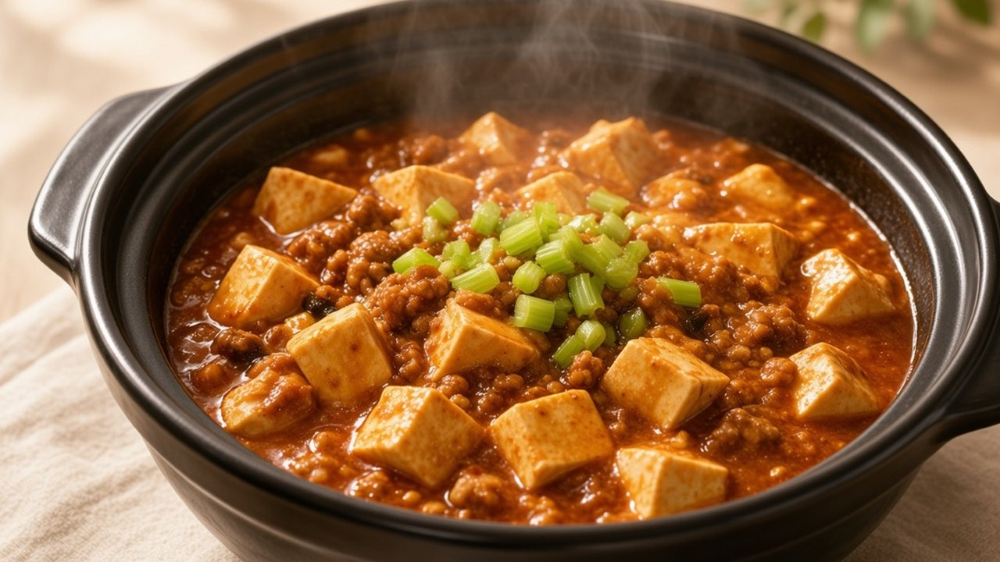
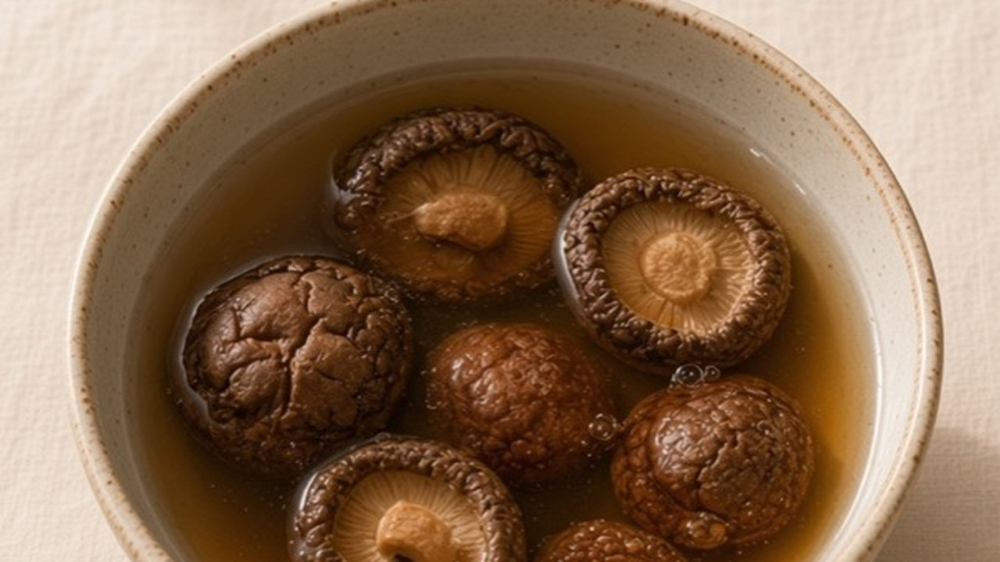
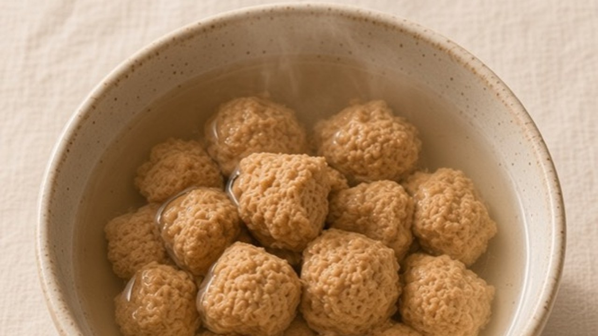
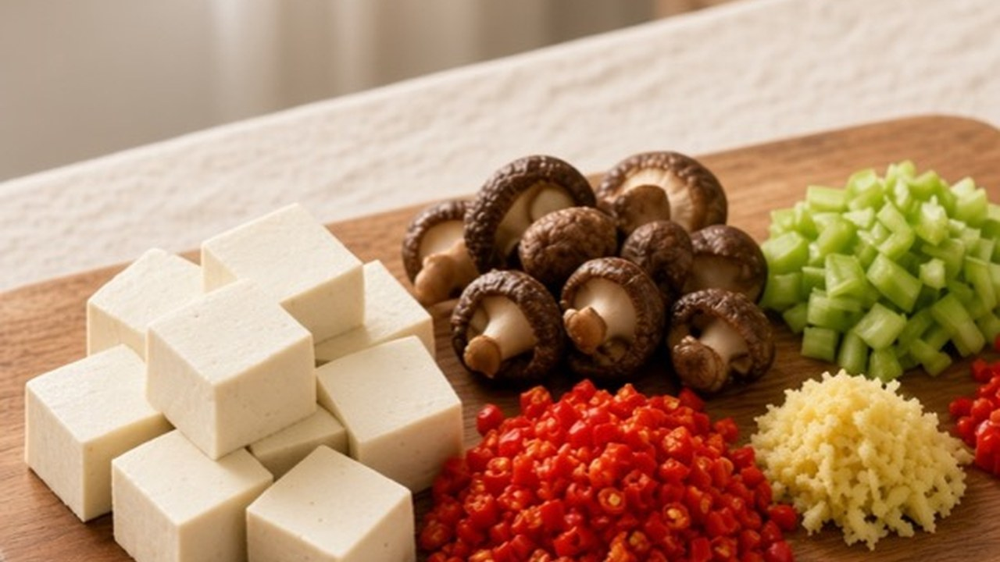
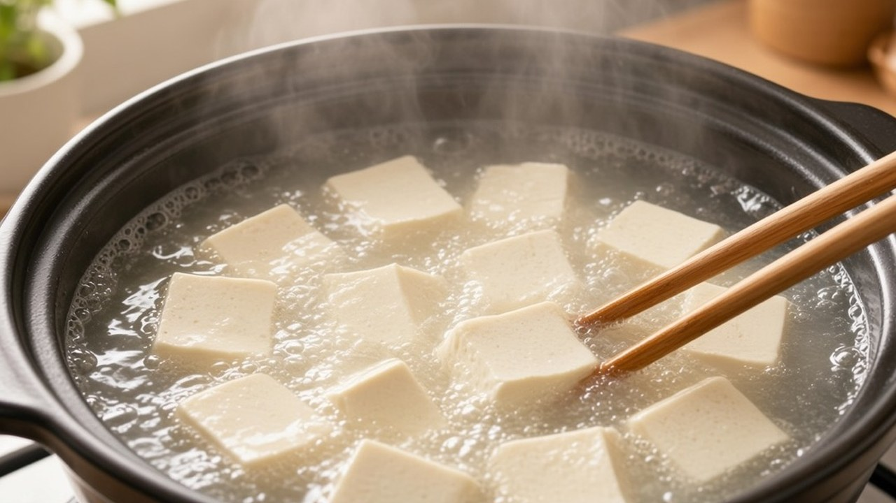
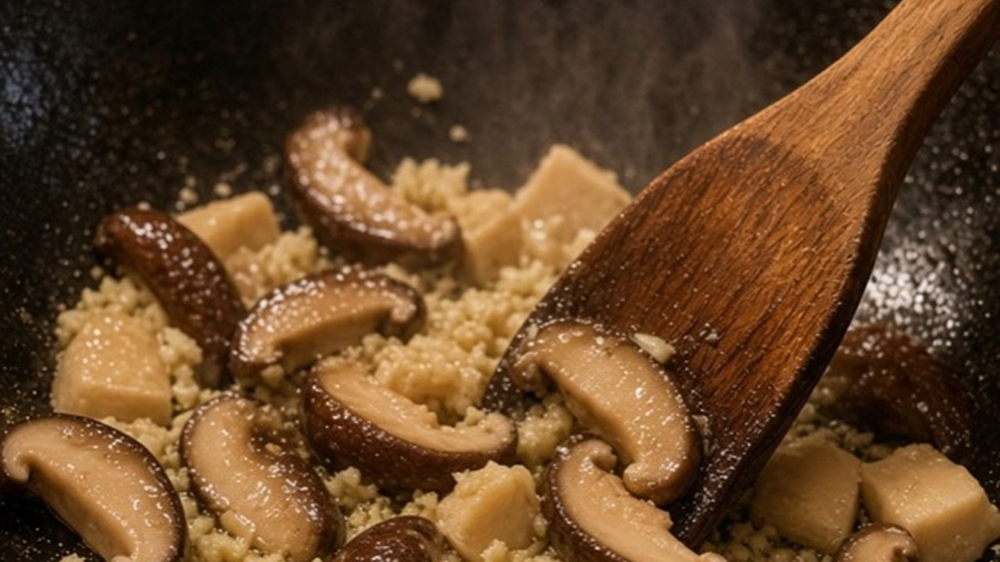
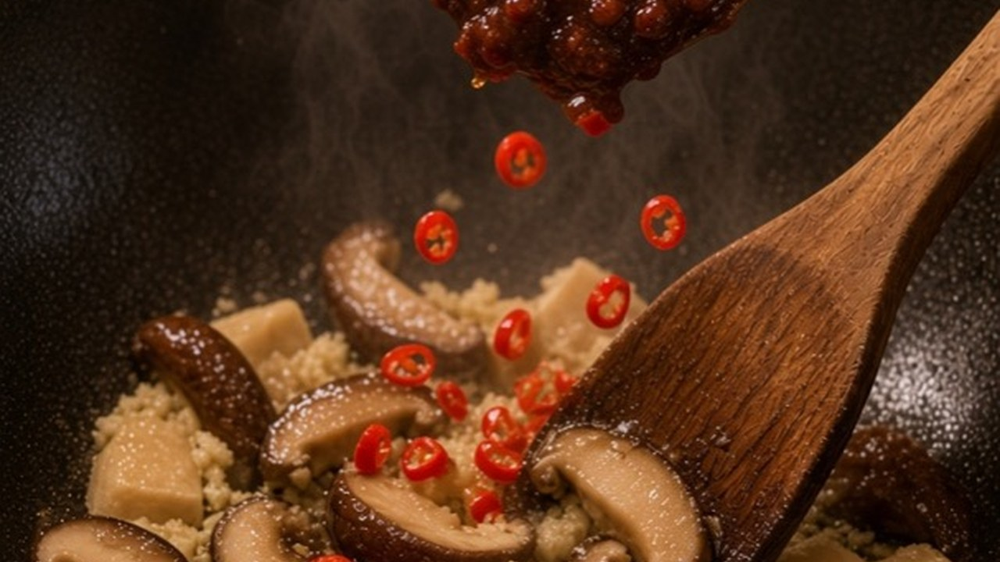
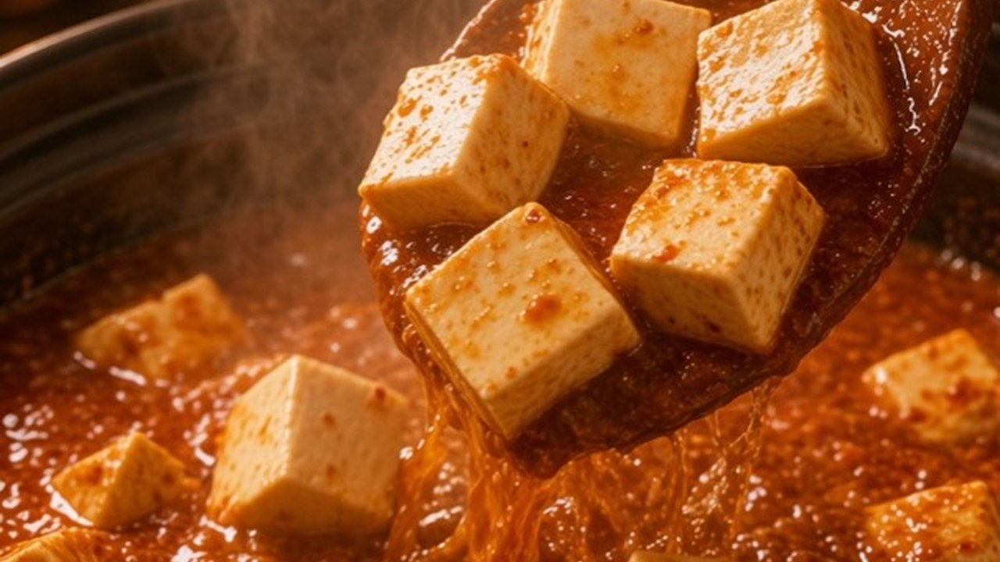
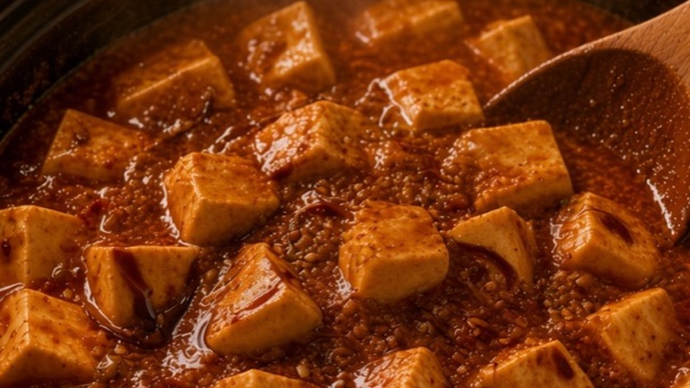
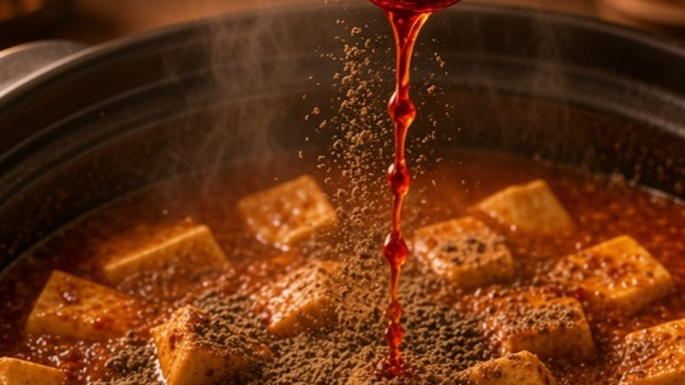

Use soft tofu for Mapo Tofu. In the south, silken or southern tofu works well.
Meditation · Cooking Meditation

Mapo Tofu
Easily stored 🥡
Freezable ❄️
Reheatable 🔥
Soft tofu, chili, and that quiet numbing heat. Nothing rushed.
Shopping list
Check off what you already have. Amounts are for 3–4 servings.
Produce & proteins
Sauces & seasonings
Step 1
Soak the shiitake in warm water until soft, then cut into small cubes. Do the same with the soy protein: soak, squeeze dry, and cut small. Cube the tofu. Mince the ginger. Chop the celery and red pepper. Keep the celery aside until the end.



🍄10gDried shiitake
🫘32gSoy protein
⬜400gSoft tofu
10gGinger
🌶️45gRed pepper
🥬10gCelery
Step 2
Give the tofu a quick blanch in lightly salted water. One minute, then lift it out. This takes away the beany smell and helps the tofu hold its shape.

⬜400gSoft tofu
⚪Pinch of salt
💧Salted water
Step 3
Warm 30g oil — a thin film, not a pool. Stir-fry the ginger, shiitake, and soy protein until fragrant. Add 10g light soy, then 30g bean paste and the red pepper. Pour in 250g boiling water slowly along the side of the pan.


🟡30gVegetable oil
10gGinger
🍄10gDried shiitake
🫘32gSoy protein
🟤10gLight soy sauce
🔴30gBean paste
🌶️45gRed pepper
💧250gBoiling water
Step 4
Slide the tofu in gently. Add 0.2g white pepper, 1.5g salt, and 3g dark soy. Simmer three minutes. Don't stir hard — let it settle into the sauce.


⬜400gSoft tofu
⚫0.2gWhite pepper
⚪1.5gSalt
⬛3gDark soy sauce
Step 5
Mix 5g cornstarch with 40g cold water and stir it in slowly until glossy. Finish with Sichuan pepper oil, chili oil, and kelp powder. Sprinkle the celery.

🌾5gCornstarch
💧40gCold water
🟤1.5gSichuan pepper oil
🟠2.5gChili oil
🌿1gKelp powder
🥬10gCelery
This recipe is mildly numbing and spicy. Adjust the bean paste, Sichuan pepper oil, and chili oil to taste.
Keep the celery until the very end. Don't add it earlier.
How to store it
Cool completely. Keep in an airtight container in the fridge for up to 3 days. Add fresh celery only when serving.
How to freeze it
Freeze the cooked tofu and sauce for up to 1 month. Tofu will be a little firmer after thawing. Do not freeze the celery garnish.
How to reheat it
From fridge: gentle simmer until piping hot; add a splash of water if thick. From freezer: thaw in the fridge, then reheat the same way. Finish with fresh celery.
Nutritional information per serving (based on 4 servings). Approximate.
Calories210 kcal
Protein13 g
| Fat | 10g |
| Saturated fat | 1.5g |
| Carbohydrates | 8g |
| Sugars | 2g |
| Dietary fibre | 2g |
| Sodium | 720mg |